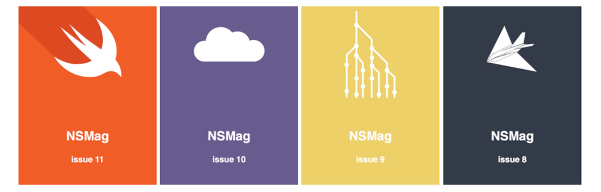

NSMag Website
you can read NSMag on website

NSMag ကို iOS နဲ့ Android version ပဲ ထုတ်ခဲ့ရာကနေ အခု Website ပေါ်ကနေ ပါ ဖတ်ရှုလို့ ရပါပြီ။ NSMag website မှာ ထွက်ခဲ့သမျှ magazine အားလုံးကို ဖတ်ရှု လို့ရပါတယ်။
NSMag ဟာ iOS development ကို အဓိက ထားပြီးရေးသားပေမယ့် အချို့ ဆောင်းပါး အချို့ဟာ web development အတွက်ပါ အကျုံးဝင်တာတွေ ရှိပါတယ်။ နောက်ပြီးတော့ ဆောင်းပါး အဟောင်းတွေကို ပြန်ညွှန်းတဲ့ အခါ link အတွက် အဆင်ပြေအောင် website ကို ဖန်တီးခဲ့ပါတယ်။
NSMag website ကို node.js static page generator ဖြစ်တဲ့ wintersmith ကို အသုံးပြုပြီးတော့ တည်ဆောက်ထားပါတယ်။ NSMag က ဆောင်းပါးအားလုံးဟာ markdown နဲ့ ရေးသားထားခဲ့တာကြောင့် wintersmith ကို အသုံးပြုပြီး website ဖန်တီးရာမှာ အဆင်ပြေလှပါတယ်။ Wintersmith က blog အတွက် design လုပ်ထားပေမယ့် ပုံမှန် nsmag လိုမျိုး content base website တွေကိုလည်း လွယ်လင့် တကူဖန်တီးနိုင်ပါတယ်။
လိုအပ်တဲ့ plugin တွေကို javascript နဲ့ ပြန်ရေးထားပြီးတော့ template တစ်ခုလုံးကို jade နဲ့ အစကနေ ပြန်တည်ဆောက်တဲ့ အတွက် အချိန်ပေးခဲ့ရပါတယ်။
Static site ဖြစ်တာကြောင့် Search အတွက်ကတော့ Swiftype ကို အသုံးပြုထားပါတယ်။ ဒါကြောင့် article အကုန်လုံးကို လွယ်လင့်တကူ ရှာနိုင်အောင် ဖန်တီးပေးထားပါတယ်။
စာဖတ်သူတွေ အနေနဲ့ iOS , Android Device နဲ့သာမက Website ပေါ်မှာပါ လွယ်လင့် တကူ ဖတ်ရှုနိုင်ပါပြီ။ offline ဖတ်လိုရင်တော့ iOS , Android app တစ်ခုခု လိုအပ်ပါတယ်။